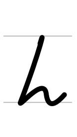

Ձ ձdzEast: dz
Ձ ձdzEast: dzWest: tsʰSource▶ Writing tutorial
ARMENIAN · VISUAL DISCRIMINATION
Learn look-alike shapes together rather than in alphabetical order. Each original illustration places the uppercase form on the left and lowercase on the right, on common guide lines. Click any image for a full-size SVG. The ւ sample contains lowercase only.
These are teaching groups, not a frequency-ranked list of errors. Handwriting varies between writers; use the examples as a model, not a universal stroke-order rule. Sound and spelling traps are separated from visual similarities.
Static letter shapes do not establish stroke order or pen lifts. Watch a teaching demonstration for the relevant letter first, then practise tracing or writing.
Both cases · especially lowercase
Compare where the stroke crosses or joins the loop, and how the tail ends. Do not reduce all four to a circle with a tail. Copy them in a row, keeping the guide lines aligned.
Ձ ձdzEast: dz Ճ ճchEast: tʃ
Ճ ճchEast: tʃ Ժ ժzhEast: ʒ
Ժ ժzhEast: ʒ Ծ ծtsEast: ts
Ծ ծtsEast: tsCopy slowly: ձ ճ ժ ծ ծ ժ ճ ձ
Lowercase
Watch the number of turns, whether the curve opens at the top or the bottom, and where the final stroke sits. Compare the right half of each image; an English n-shaped curve is not a reliable sound clue.
 Ն նnEast: n
Ն նnEast: n Ա աaEast: ɑ
Ա աaEast: ɑ Ս սsEast: s
Ս սsEast: s Ո ոo / voEast: ɔ / vo
Ո ոo / voEast: ɔ / vo Մ մmEast: m
Մ մmEast: mCopy slowly: ն ա ս ո մ մ ո ս ա ն
Uppercase
Focus on the left-hand samples: look at the upper loop, the lower curve, and whether the final stroke crosses or extends below it. Their printed capitals are also easy to mix up.
 Զ զzEast: z
Զ զzEast: z Ջ ջjEast: dʒՁ ձdzEast: dz
Ջ ջjEast: dʒՁ ձdzEast: dz Չ չchʰEast: tʃʰ
Չ չchʰEast: tʃʰCopy slowly: զ ջ ձ չ չ ձ ջ զ
Lowercase
Use the ruled lines to compare the length and direction of the descender. In the sample, շ has a simple long slanting stroke ending in a hook; compare the starting and finishing strokes of the other two.
 Շ շshEast: ʃՉ չchʰEast: tʃʰ
Շ շshEast: ʃՉ չchʰEast: tʃʰ Ղ ղghEast: ʁ
Ղ ղghEast: ʁCopy slowly: շ չ ղ ղ չ շ
Lowercase
In this model, ո is an arch with a short finishing stroke. Compare the additional bend of ռ and the two-component form of ու. The latter writes a single vowel /u/.
Ո ոo / voEast: ɔ / vo Ռ ռrrEast: r
Ռ ռrrEast: r Ու ուuEast: u
Ու ուuEast: uCopy slowly: ո ռ ու ու ռ ո
Print → handwriting
These are worth learning as separate shapes even if they look similar in a font. ր is an r sound, ը is schwa, and traditional ւ can represent v. The ւ picture is an extracted lowercase sample, not a standalone original.
 Ր րrEast: ɾ
Ր րrEast: ɾ Ը ըuhEast: ə
Ը ըuhEast: ə
Ւ ւw / v (hiwn)East: v (traditional)Copy slowly: ր ը ւ ւ ը ր
Uppercase
Compare the left-hand forms at the same scale: count loops and crossings, and check where each upright or diagonal begins and ends.
 Փ փpʰEast: pʰ
Փ փpʰEast: pʰ Ք քkʰEast: kʰ
Ք քkʰEast: kʰ Ֆ ֆfEast: f
Ֆ ֆfEast: f Տ տtEast: t
Տ տtEast: tCopy slowly: փ ք ֆ տ տ ֆ ք փ
Traditional vs. reformed
The birthday greeting illustrates the difference: reformed շնորհավոր, traditional շնորհաւոր. The characters are not freely interchangeable in every word. Learn the exact spelling.
 Վ վvEast: v
Վ վvEast: vCopy slowly: վ ւ ւ վ
Sound / spelling, not necessarily shape
ե and է may both represent /ɛ/; ո and օ may both represent an o vowel. Word-initial ե and ո often have a y or v onset. Exact spelling matters more than guessing from pronunciation.
 Ե եe / yeEast: ɛ / jɛ
Ե եe / yeEast: ɛ / jɛ Է էeEast: ɛՈ ոo / voEast: ɔ / vo
Է էeEast: ɛՈ ոo / voEast: ɔ / vo Օ օoEast: o
Օ օoEast: oCopy slowly: ե է ո օ օ ո է ե
Sound / spelling
In Eastern Armenian ր is typically tapped and ռ trilled. In Western Armenian this distinction may be reduced; preserve the written letter.
Ր րrEast: ɾՌ ռrrEast: rCopy slowly: ր ռ ռ ր
Eastern vs. Western pronunciation
Eastern Armenian distinguishes voiced, plain voiceless and aspirated stops. Western Armenian reorganizes these contrasts. Read the Eastern and Western hints below each image; they are broad, not an exact guide to every dialect.
 Բ բbEast: b
Բ բbEast: b Պ պpEast: pՓ փpʰEast: pʰ
Պ պpEast: pՓ փpʰEast: pʰ Դ դdEast: dՏ տtEast: t
Դ դdEast: dՏ տtEast: t Թ թtʰEast: tʰ
Թ թtʰEast: tʰ Գ գgEast: ɡ
Գ գgEast: ɡ Կ կkEast: kՔ քkʰEast: kʰ
Կ կkEast: kՔ քkʰEast: kʰCopy slowly: բ պ փ դ տ թ գ կ ք ք կ գ թ տ դ փ պ բ